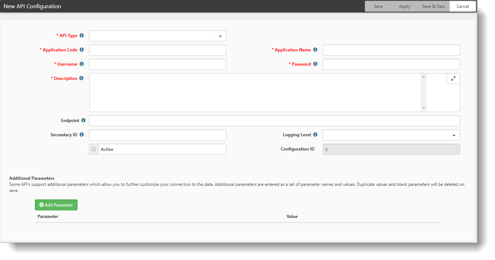

Several
To configure
Go to System Admin  > Advanced > API Configuration.
> Advanced > API Configuration.
The API Configuration dashboard opens.
Click Add.
The New API Configuration form opens.

Complete the form:
| API Type | Select Web Service. |
| Application Code |
SFDCDEV is the sandbox configuration SFDCPROD is the Production configuration |
| Application Name | Type Salesforce Integration (user choice) |
| Username | Enter the username of the API account. |
| Password | Enter the password of the API account AND the integration key. |
| Description | Provide a description (user choice). |
| Endpoint | Type the URL of the API for the Partner WSDL. |
| Secondary ID | not used |
| Logging Level |
0 None 1 Only logs that the process ran and the date/time begin and end 2 Logs process details and results (for setup and debugging only) |
| Active | |
| Configuration ID | |
| Add Parameter |
Additional Parameters are semi-colon delimited name=value pairs, such as param1=value1;param2=value2. Spaces between parameters are not allowed.
|
Click Apply.
To add more parameters, see the next topic